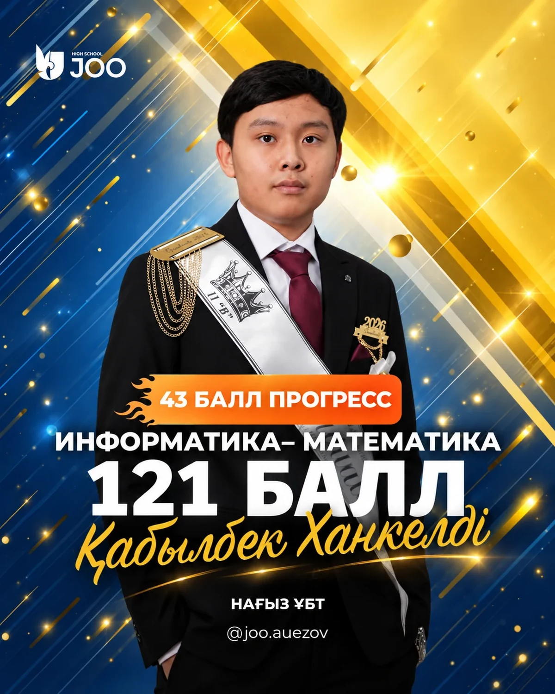
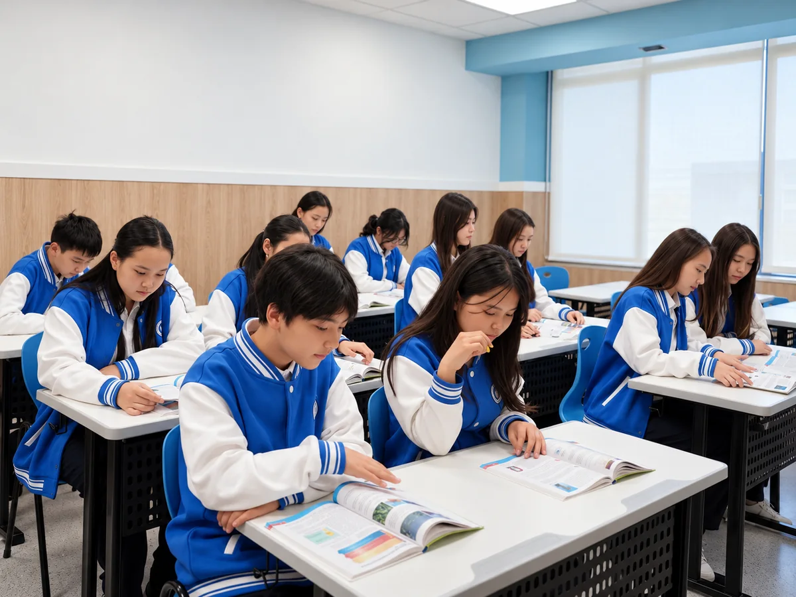

STUDENT / 01—08ҰБТ / STUDENT PROFILE
Қабылбек Ханкелді
Информатика + математика
ҰБТ БАЛЫ121/ 140
ӨСІМ+43БАЛЛ
Нәтижелер тек берілген 8 постер бойынша, бүкіл мектептің орташа көрсеткіші емес.

ҰБТ бойынша бізге берілген сегіз оқушы постерінің нақты деректері.
Бұл статистика тек сайтқа берілген сегіз постердегі баллдардан есептелген. Ол мектептің барлық түлектерінің орташа көрсеткіші емес.
ҰБТ баллдары — 140 балдық шкалаға қатысты. Көлденең диаграмма көрсеткіштерді салыстырады.
Ұсынылған сегіз постердің ішіндегі ең жоғары нәтиже.
Оқушыны таңда — фотосы, ҰБТ балы және көрсетілген өсімі бір карточкада ашылады. Бұл — осы сегіз материалдың деректері.

STUDENT / 01—08Информатика + математика
Постерлердегі progress мәні +35-тен +50-ге дейін. Орташа өсім — +42.5 балл.
Әр оқушының нәтижесін профильдік пән жұбымен бірге қарастыру маңызды. Төмендегі карточканы бассаң, постерлер сүзіледі.
Сегіз оқушының түпнұсқа фото-постерлері қайта қосылды. Суретті басып, толық өлшемде көре аласың.
| # | Оқушы | Профиль | Өсім | ҰБТ |
|---|---|---|---|---|
| 01 | Қабылбек Ханкелді | Информатика · математика | +43 | 121 |
| 02 | Ерлан Диас | Биология · химия | +42 | 116 |
| 03 | Абубакир Азамат | География · математика | +43 | 106 |
| 04 | Базархан Жанел | География · математика | +49 | 103 |
| 05 | Ескожа Құралай | География · математика | +50 | 100 |
| 06 | Турарова Аяжан | География · биология | +39 | 99 |
| 07 | Нұрғалым Еркегали | Информатика · математика | +39 | 93 |
| 08 | Наурызбай Нұрасыл | География · математика | +35 | 91 |
Бұл — дайындық логикасын бейнелейтін түсіндірме модель. Оқушылардың нақты жеке жоспары ретінде ұсынылмайды.
Білімдегі әлсіз жерді анықтау.
Келесі басымдықты нақтылау.
Мақсатты тақырыппен жұмыс.
Пробник арқылы тексеру.
Қателерге қарап жоспарды жаңарту.
JOO Auezov ресми жариялаған материалдарға сүйенген грант пен университетке түсу нәтижелері. Бұл бөлім ҰБТ бойынша жоғарыдағы 8 постерлік аналитикадан бөлек көрсетіледі.
Сандар мектептің жарияланған грант қорытындысы туралы постынан алынған.
Есімдерді көруЖарияланған 1–25 нөмірлі тізім бойынша оқушылар мен оқу орындары. Іздеуді пайдалансаң, өзіңе керек есімді немесе университетті жылдам табасың.
Іздеу бойынша нәтиже жоқ. Басқа есім немесе университет енгіз.
Бұл есімдер жіберілген Instagram жарияланымдарының суреттерінен терілді. Аты-жөні немесе университет атауы бойынша қате болса, түпнұсқа постермен салыстырып түзету керек.
Грант туралы жарияланған деректер осы бетте кесте, сандық визуализация және іздеуге болатын есімдер тізімі ретінде берілген.
Аяқталған жарияланымдағы жалпы көрсеткіш.
Алматы, Астана және Атырау.
26–32 тізімі бөлек сақталды.
Маңызды: бұл 26–32 жазбалар бөлек жарияланымнан алынған. Оларды «25 мемлекеттік грант» қорытындысына автоматты түрде қоспаймыз: жарияланымдардың қамту кезеңі мен грант түрі бірдей екені расталмаған.
Екі түлектің университет нәтижелері — монтаждалған фотокарточкалармен бірге.

University of Parma

Corvinus University
Көрсетілген 121 — осы сегіз постер ішіндегі ең жоғары нәтиже. Ол мектеп рекорды немесе барлық оқушылар бойынша есеп ретінде көрсетілмейді.
ОҚУ ЖҮЙЕСІ ↗